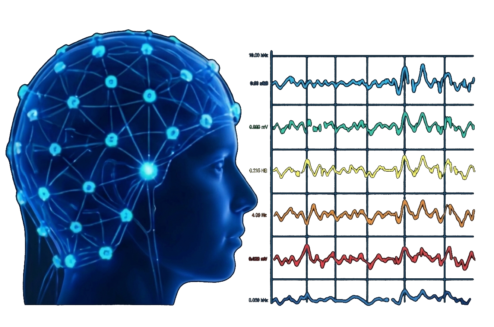
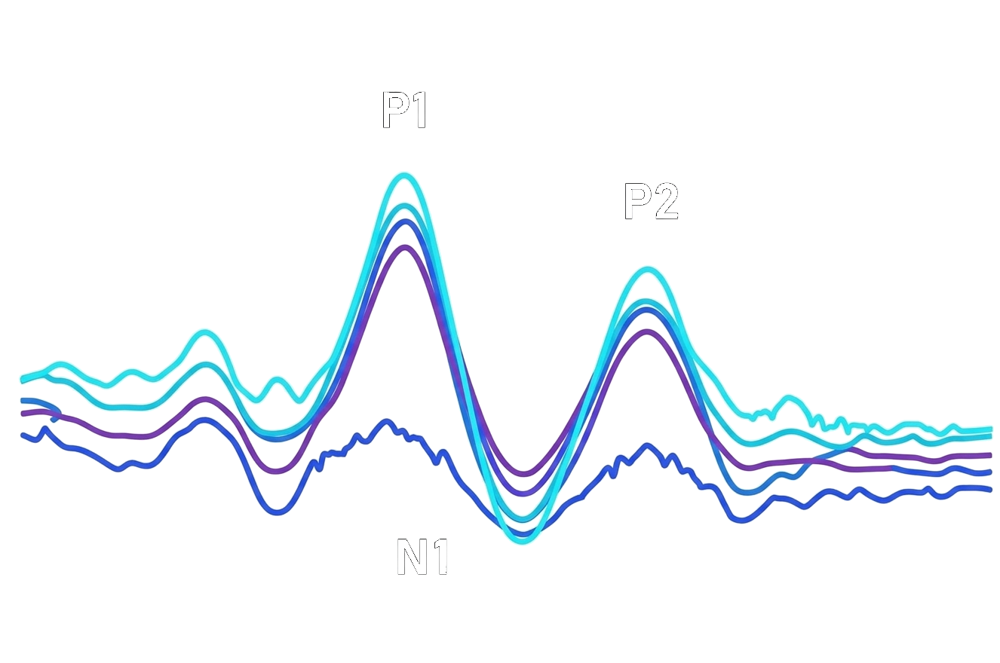
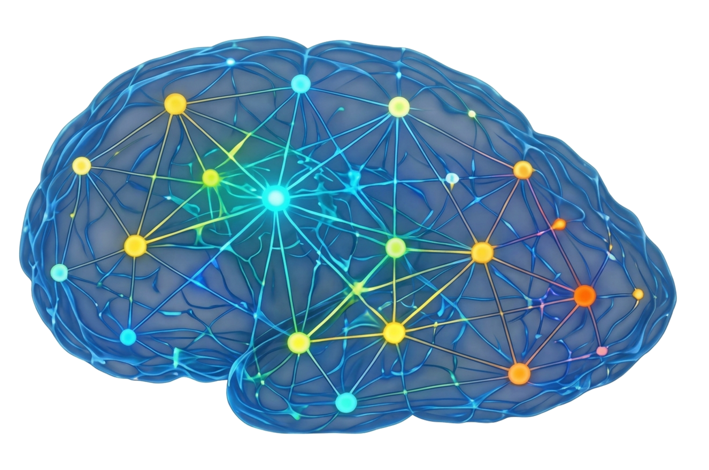
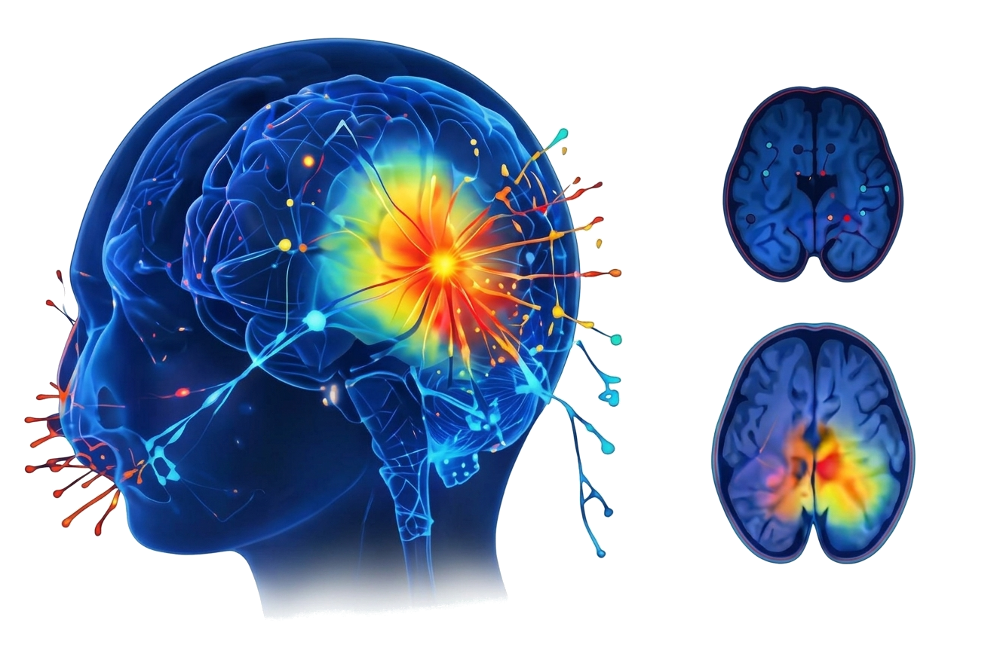
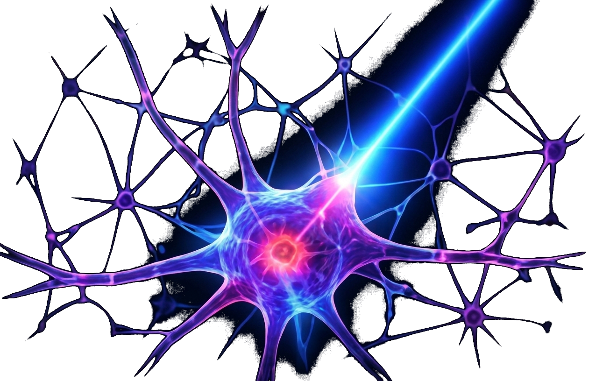

EEG

EEGSim
Simulación de señales EEG
Genera y explora señales EEG reales y sintéticas, con diferentes estados y condiciones experimentales.
Acceder
→
ERP

ERPSim
Simulación de potenciales evocados
Analiza la respuesta cerebral a estímulos y experimenta con diferentes paradigmas y condiciones.
Acceder
→
GRAPH

GraphSim
Conectómica y redes cerebrales
Explora la organización funcional del cerebro mediante redes complejas y métricas de conectividad.
Acceder
→
SOURCE

SourceSim
Localización de fuentes
Simula y analiza la actividad cerebral con técnicas de localización de fuentes en EEG/MEG.
Acceder
→
OPTOGEN

OptoGenSim
Optogenética y circuitos neuronales
Simula la activación y modulación de circuitos neuronales mediante optogenética.
Acceder
→